0. 前置知识
理解 $R^n$ （n维向量空间），增广矩阵（augmented matrix），主元（pivot），自由变量（free
variable），维度（Dimension），标量（scalar）与向量（vector）的区别，知道向量、矩阵运算规则，大致知道子空间（Subspace）、基（Basis）、标准基（standard basis）、可逆矩阵（invertible matrix）等概念。其实最好就是上过照本宣科的线代课，对基本概念都有一些了解，想要从几何角度来加深对线代的理解，就可以看看这篇博客。
1. $R^n$ 中的向量（Vector）
首先从最基本的概念讲起。一个n维向量在几何上有两种解释：一种是它是n维空间里的一个点（point），另一种则是向量（vector），如下图所示。
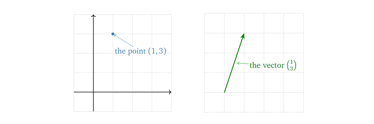
在之后的描述中，除非特别声明，否则默认向量起始于原点。但需要注意的是，这只是为了描述的方便，向量在可以在空间中任意位置，它并不一定要以原点为起点。换句话说，一个向量只由它的长度和方向决定，与其位置无关。
当然，向量也可以表示两个点之间的距离，如下图所示。
2. 向量的运算及其几何表示
向量的相加减结果可由向量间各个维度数值各自相加减得到，如下图所示。
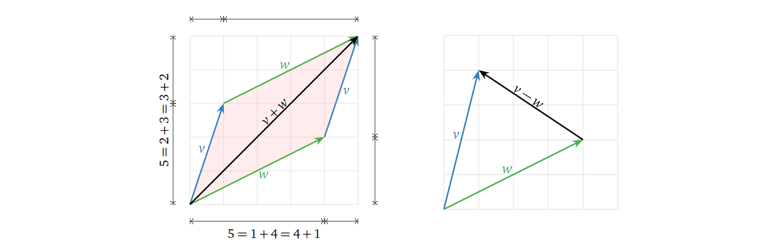
而标量与向量的乘法结果可由标量与向量各个维度数值相乘得到，如下图所示。
所以，从几何角度上看，向量间的线性组合，由各个向量各自的缩放（与标量相乘），再将它们相加得到。
而向量的线性组合又能反映代数上的什么东西呢？假设有这么一个方程（向量方程，即由向量构成的方程，等价于一个线性代数方程）：
那么我们所要求的解（ $x$ 与 $y$ ），是不是就是两个向量的缩放因子？换句话说，一个向量方程（线性代数方程）有解即意味着等号右边的向量是等号左边向量们的线性组合，而解就是线性组合中的缩放因子。
3. 生成空间 （Span）
生成空间是一个很重要的概念。简单来说，对于一组向量，以他们为基能张成（线性组合而成）的空间就称为它们的生成空间，可记为：
其中 $x_1$ 到 $x_k$ 为标量（缩放因子），$v_1$ 到 $v_k$ 为基向量。
以在 $R^3$ 中为例，一个向量张成的生成空间为一条一维直线，两个不共线的向量张成的生成空间为一个二维平面，三个不共线且不都在一个平面上的向量张成的生成空间则为一个三维空间，而三个不共线但在一个平面内的向量张成的生成空间则为一个二维平面，如下图所示。
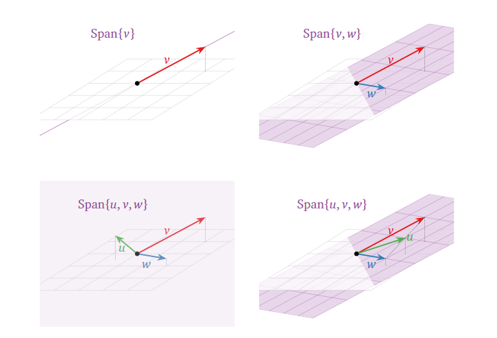
结合上面线性组合相关的讨论，我们又可知道由一组基向量以及它们的生成空间中的任意向量组成的向量方程（代表着一个线性代数方程）有解。
4. 矩阵方程 （Matrix Equations）
首先回忆一下，一个矩阵 $A$ 乘上一个向量 $x$ ，可以视为矩阵 $A$ 中各向量与向量 $x$ 中各元素的线性组合，如下公式所示。
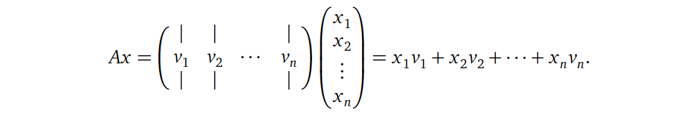
其中 $x_1$ 到 $x_k$ 为标量（缩放因子），$v_1$ 到 $v_k$ 为向量。所以显然，向量 $x$ 中元素的数目应与矩阵 $A$ 中向量的数目相等，即对于 $Ax = b$ 而言，矩阵 $A$ 的列数应与 $x$ 维度一致。而这个 $Ax = b$ 就被定义为矩阵方程 （Matrix Equation)，其中向量 $x$ 中各元素大小未知（想想与向量方程的关系？是不是两者是等价且可以相互转换的？）。这也是线性系统的另一种表达方式。
总结一下，目前为止，结合代数中的内容，我们就有四种方式来思考一个线性系统：
- 线性代数方程组（代数角度）；
- 增广矩阵（代数角度）；
- 向量方程（几何角度）；
- 矩阵方程（几何角度）。
上面我们解释了矩阵方程与向量线性组合的关系，再回头看我们之前讨论的线性组合与生成空间的关系，是不是发现又可以串起来了？也就是说，当且仅当向量 $b$ 在矩阵 $A$ 中各向量张成的生成空间里，
$Ax = b$ 有解。其实这就搭起了代数中方程有解与几何中生成空间的桥梁。下面给一个直观的例子。
假如我们要求 $Ax = b$ 是否有解？对于：
$$
\mathbf{A} = \begin{pmatrix}
2 & 1\
-1 & 0\
1 & -1
\end{pmatrix},
\mathbf{B} = \begin{pmatrix}
0\
2\
2
\end{pmatrix}
$$
由上面我们的讨论可知，当且仅当向量 $b$ 在矩阵 $A$ 中各向量张成的生成空间里，
$Ax = b$ 有解。所以我们将 $A$ 中各向量张成的生成空间（紫色）与 $b$ （黑色箭头）画出，可见 $b$ 并不在 $A$ 中各向量张成的生成空间中，所以方程无解。
接下来我们考虑 $Ax = b$ 有解的情况，怎么从几何上去表示其解呢？在回答这个问题之前，我们先考虑一个简单一点的例子：如果 $b$ 为零向量时解是什么呢？考虑下面的情况：
假设我们要求 $Ax = 0$ 的解（这类方程至少有一个平凡解(trivial solution) $x=0$ ），对于：
$$
\mathbf{A} = \begin{pmatrix}
1 & -1 & 2\
-2 & 2 & -4
\end{pmatrix}
$$
我们用参数化的形式表示它的解，如下所示：
显然我们可以将其转换为向量方程的形式：
所以显然，方程的解为上述两个向量张成的生成空间：
将其可视化如下图所示：
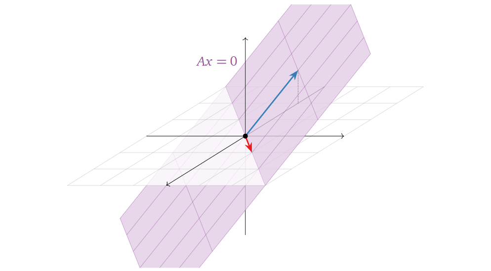
所以从几何角度上看，方程 $Ax = 0$ 的解可以表示为某个/组向量张成的生成空间，注意区分好与上文中对于 $Ax = b$ 讨论的区别（“解是一个生成空间（解是什么）”与“解在生成空间中（有解的条件）”的区别）。顺带回顾一下变量数目与空间维度的关系：在这个例子中，一共有三个变量（构成 $x$ ），那么方程的解集必在 $R^3$ 或其子空间，而这个例子中只有两个自由变量（free variable），则解集是在一个二维平面上（自由变量的数目等于解集空间的维度）。
接着回到我们之前的问题：假设 $Ax = b$ 有解，那么它的解如何在几何上表示？它与 $b$ 为零向量时有什么不同呢？考虑下面情况：
$$
\mathbf{A} = \begin{pmatrix}
1 & -1 & 2\
-2 & 2 & -4
\end{pmatrix}，
\mathbf{B} = \begin{pmatrix}
1\
-2
\end{pmatrix}
$$
类似地，我们可以得到其解为：
对比这个结果与上面 $b$ 为零向量时的结果，显然可以看出，两者相差的只是一个平移( $x_2$ 与 $x_3$ 为0时的特解) $p$ ，如下图所示：
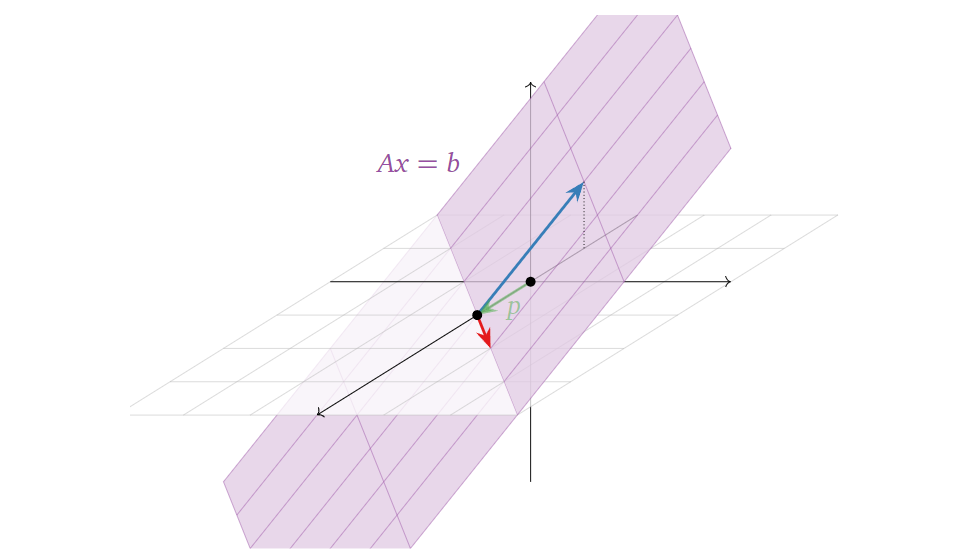
当然，这里举的例子都是方程不是有唯一解的情况，而如果方程只有唯一解，其解在空间上表示就只是一个点了（此处 $Ax = b$ 与 $Ax = 0$ 相差的依然只是一个平移）。
至此，我们在几何角度上又从两个方面上去描述一个矩阵方程（ $Ax = b$ ），注意两者的区别：
- $Ax = b$ 有解的条件（$b$ 在矩阵 $A$ 中列向量张成的生成空间中，为 $x$ 选 $b$）；
- 解集空间（对于确定的 $b$，为 $b$ 选 $x$）。
5. 线性独立（Linear Independence）
首先回忆一下线性独立的定义：如果一组向量 $v_1$ 到 $v_k$ ，对于下面的方程有且仅有一个平凡解（$x_1=x_2=…=x_k=0$），则称它们彼此 线性独立。
换句话说，就是这组向量中，没有任何一个向量可以由其他向量线性组合得到。下图给出两个 线性依赖（不独立） 的例子：
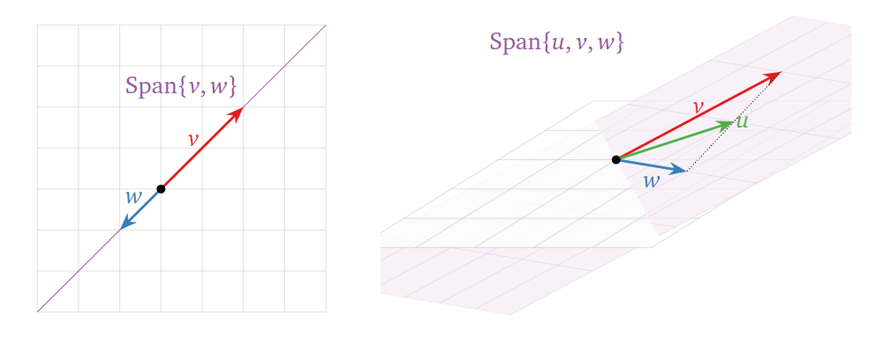
也就是说，从几何角度上看，如果一个向量集合中，有一个向量在其他向量张成的生成空间中，那么这组向量就线性依赖（不独立）；而如果其中任何一个向量都不在其他向量张成的生成空间中，那么这组向量就线性独立。再换个角度想，我们将这些向量一个一个加入向量组中，每加入一个向量组张成的生成空间都增大，那么这组向量就是线性独立的。下面再可视化给出一个线性独立的例子：
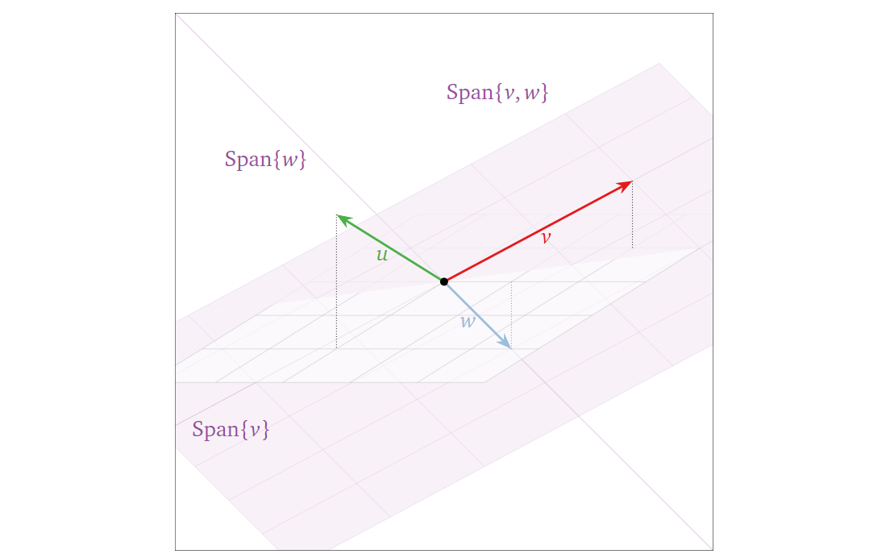
而从代数角度上看，矩阵 $A$ 中各列向量线性独立的条件是化简后每一列都有一个主元（也就是说对于一个列数目大于行数目的矩阵，它必然有线性依赖的列，因为没法做到化简后每一列都有一个主元）。
6. 子空间、列空间、零空间与基（Subspace, Column Space, Null Space and Basis）
什么是子空间（Subspace）？简单地说，子空间就是满足下面三个条件的 $R^n$ 里的一些点构成的子集（Subset）：
- 加法下的封闭性：该子空间中的两个两个向量相加，结果仍在该子空间中；
- 标量乘法的封闭性：该子空间中的向量乘上一个标量，其结果仍在该子空间中；
- 非空性：零向量在这个子空间中（子空间要存在，势必要包含了零向量）。
所以显然，由上面的前两个性质，某一子空间中的向量的线性组合（它们的生成空间）结果仍在该子空间中；且由第三个性质，子空间必然会经过原点。换句话说，子空间本身就是一个生成空间，它包含了它之中任何向量张成的生成空间。进一步讲，其本身就是其最大的一个子空间。也就说，随着选中的某一子空间中的向量数目变多，这些向量张成的生成空间也会逐步填满这个子空间。下图给出两个子空间的例子（一维与二维）：
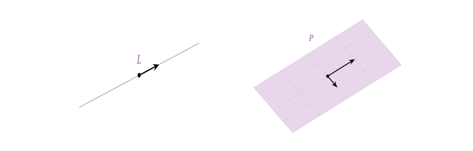
其中黑色箭头表示用于张成生成空间的向量（基向量，下面会进一步讨论），黑点表示原点。下面再给出一些非子空间的例子：
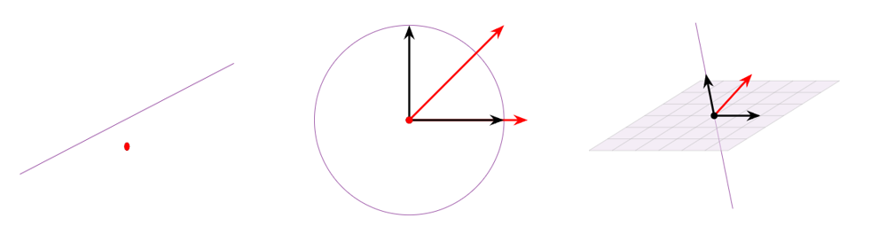
其中紫色区域表示定义的“空间”（注意并不是子空间），黑色箭头表示“空间”上的向量，红色箭头表示由“空间”中向量线性组合得到的不在“空间”中的向量。
另外注意区别空间子集（subset）与子空间（subspace）的区别：子空间是一个需要满足上述三个条件的空间子集，也就是空间子集是一个更大的概念。
接下来我们讨论两种重要的子空间：列空间（由矩阵 $A$ 中各列向量张成的子空间/生成空间，记作Col( $A$ )）与零空间（对矩阵 $A$，满足 $Ax=0$ 的解构成的子空间/生成空间，记作Null( $A$ )）。下面如下矩阵 $A$ 举例：
$$
\mathbf{A} = \begin{pmatrix}
1 & 1 \
1 & 1 \
1 & 1
\end{pmatrix}
$$
它的列空间可以表示为：
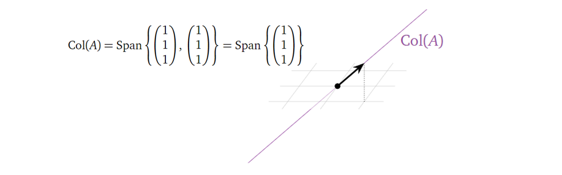
它的零空间可以表示为：
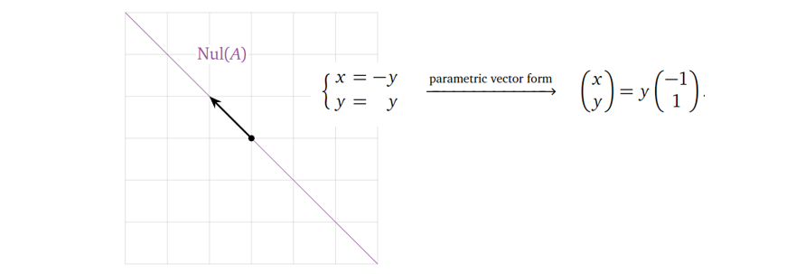
留意列空间是一条在三维（维度大小与矩阵的行数目相同）空间中的一维（等于矩阵化简后主元的数目）线，零空间是一条在二维（维度大小与矩阵的列数目相同）空间中的一维（等于矩阵化简后自由变量的数目）线。这边又隐含了一个重要的定理：矩阵的列空间的维度与零空间的维度之和为矩阵列的数目，在这个例子中为 $1+1=2$ 。
上面讲完子空间/生成空间，接下来我们讨论子空间/生成空间中的基。为什么需要基的概念，我想最朴素的原因就是数学家们想用最少数量的向量来表征一个生成空间，而基于这个想法，基向量之间就必须相互独立，不然就会有冗余的向量（可以由其他向量线性组合得到）。而对于同一个非零生成空间，它可以有无数组基（比如一个平面，其上任意两个不共线的向量构成它的一组基），但基向量的数目是确定的（由生成空间的维度决定，这其实也是维度的定义）。下图给出了 $R^2$ 的两组基：
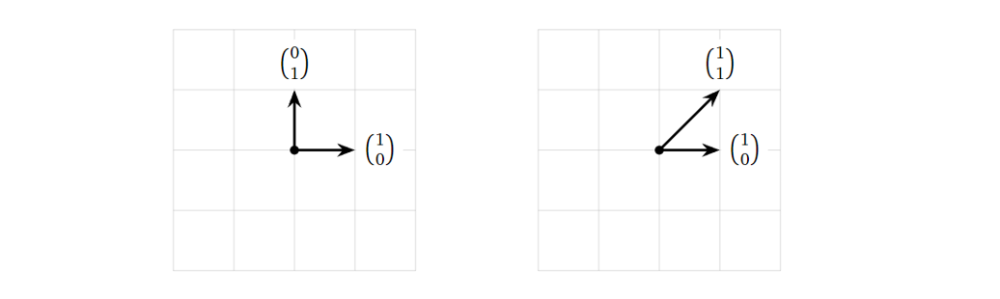
其中左图是一组标准基。
那么如何确定列空间的基呢？对于某个矩阵，它的主元（pivot）所在列就构成了它的一组基，如下举例所示，其中RREF（Reduced row echelon form）表示简化列阶梯形矩阵：
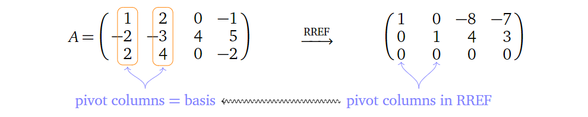
也就是说，列空间的基向量的数目（维度）等于矩阵主元的数目。
而如何确定零空间的基呢？将零空间以参数化向量方程表示出来，也可以很轻易得到它的一组基：
类似地，零空间的基向量的数目（维度）等于矩阵自由变量的数目。也就是说，我们从基的角度出发，再次印证了上面给出的一个定理：矩阵的列空间的维度与零空间的维度之和为矩阵列的数目（主元与自由变量数目之和）。下面给出几个图进一步说明这个关系：
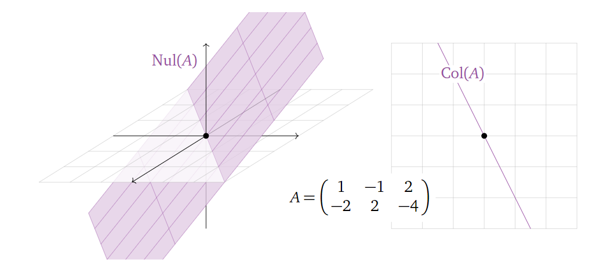
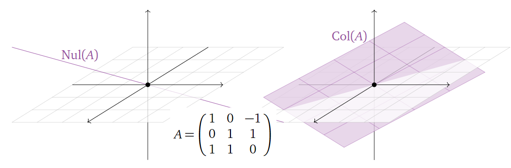
而其实矩阵的 秩（rank） 代表的就是其列空间的维度，零化度（nullity）代表的就是其零空间的维度。也就是说，一个矩阵的秩加上其零化度，等于其列向量的个数（$rank(\mathbf{A})+nullity(\mathbf{A})=n$，$n$ 为矩阵 $\mathbf{A}$ 的列数目）。再结合之前的讨论，换一个说法就是，一个矩阵的主元的个数加上其解集的维度（自由变量的个数），等于其拥有的变量的总个数。其实这个关系也反映了我们在选择 $Ax = b$ 中的 $x$ 与 $b$ 的平衡：当我们拥有的选择 $x$ 的自由越多，那么我们拥有的选择 $b$ 的自由就越少，而这个关系被矩阵 $A$ 中列数目所限定。
而很自然地，当基确定之后，我们就可以基于基构建一个新的坐标系。在笛卡尔坐标系下，$u_1 ~ u_4$ 的坐标分别为：
$$
u_1 = [3, -1, 0], u_2 = [-3/2, 1, -3/2], u_3 = [5/2, -3/2, 2], u_4 = [3/2, 0, -3/2]
$$
现在考虑用 $v_1, v_2$ 来表示它们，如下图所示：
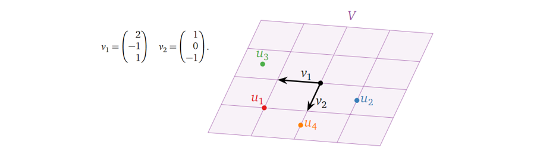
我们就可以得到以 $v_1, v_2$ 为基的新坐标系下$u_1 ~ u_4$ 的坐标：
$$
u_{1\beta} = [1, 1]， u_{2\beta} = [-1, 1/2], u_{3\beta} = [3/2, -1/2], u_{4\beta} = [0, 3/2]
$$
由此，相同的几个点在另一个空间中被表示出来，这就完成了一次空间变换。当然，能这么表示的前提是 $u_1 ~ u_4$ 几个点刚好在 $v_1, V_2$ 的生成空间中。
7. 矩阵变换（Matrix Transformations）
对于一个$m$行$n$列的矩阵 $A$ ，其有 $b=Ax$ 的关系，我们可以将其视为一个变换（Transformation），将自变量 $x$ (维度为$n$的向量)，变换为因变量 $b$ (维度为$m$的向量)。顺便再提一下， $b$ 在矩阵 $A$ 的列空间中。下图给出一个例子，其中绿色箭头为 $x$ ，红色箭头为 $b$ ，中间的矩阵即为 $A$ ，紫色直线为矩阵 $A$ 的列空间，也就是说矩阵 $A$ 将一个三维空间（定义域，domain）中的向量 $x$ 与其列向量进行线性组合，将其变换到一个二维平面（取值空间，codomain）上，但在这个二维平面上 $A$ 的列空间只是一条一维直线（值域，range，其实也就是矩阵 $A$ 的列空间），上面代表着 $b$ 能分布的空间。
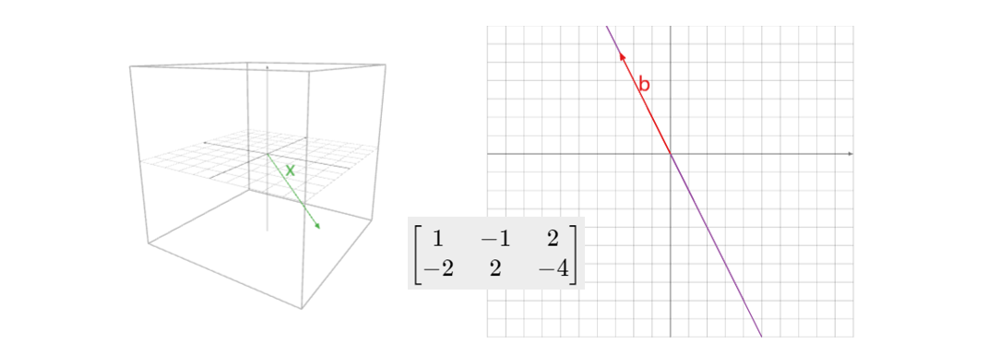
这边再给出几个矩阵背后代表的几何意义的例子，最好自己先思考再看之后的答案以加深理解：
如果要将三维空间的点( $x$ )投射（projection）到x-y平面上( $b$ )，那矩阵 $A$ 应该是什么样子的呢？
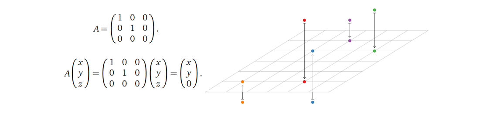
那如果要使一个二维平面上的点关于y轴对称呢（Reflection）？
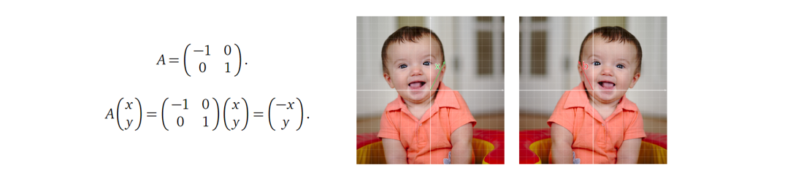
而如果要使一个二维平面上的点保持不变呢（Identity）？
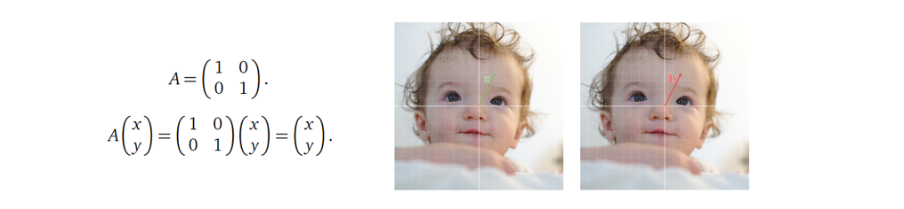
这也是单位矩阵（Identity Matrix）名字的由来。那如果要将向量进行缩放（Dilation），是不是只需要对单位矩阵乘上一个标量？
接着试着回答一个稍微难一点的问题：如果要将二维平面上的点顺时针旋转90度呢（Rotation）？
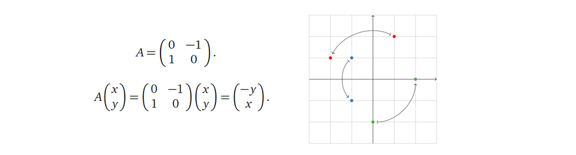
留意到这里矩阵 $A$ 的列向量（[0,1], [-1,0]）是不是刚好是二维笛卡尔坐标系下基向量（[1,0],[0,1]）顺时针旋转90度的结果呢？
而如果要实现下图所示的在x轴上的错切（shear in the x-direction），矩阵 ( $A$ )应该是什么样的？
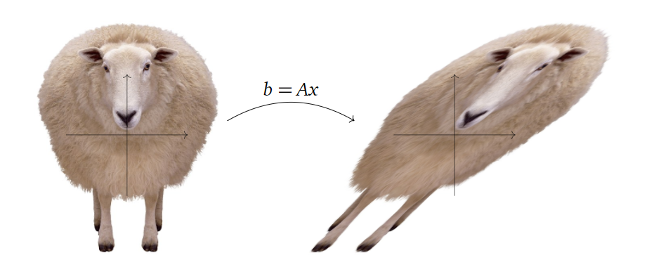
可以尝试下面这三个矩阵代表的几何变换分别是什么。
$$
\mathbf{A_1} = \begin{pmatrix}
1 & 1 \
0 & 1
\end{pmatrix},
\mathbf{A_2} = \begin{pmatrix}
1 & 0 \
1 & 1
\end{pmatrix},
\mathbf{A_3} = \begin{pmatrix}
1 & 1 \
1 & 1
\end{pmatrix}
$$
（答案是第一个矩阵代表着上面的变换。）
对于某个矩阵变换，我们还需要留意，其对应的是一个一对一（one-to-one）的变换（换个角度就是，矩阵方程有唯一解或无解/ $Ax=0$ 只有一个平凡解/ 矩阵 $A$ 的列向量都线性独立/ 矩阵 $A$ 的每一列都有主元/ 矩阵 $A$ 的列空间（值域）与定义域维度一致），还是一个多对一的变换，注意没有一对多的变换。下面给出几个图解例子：
首先是一个一对一的矩阵变换例子：
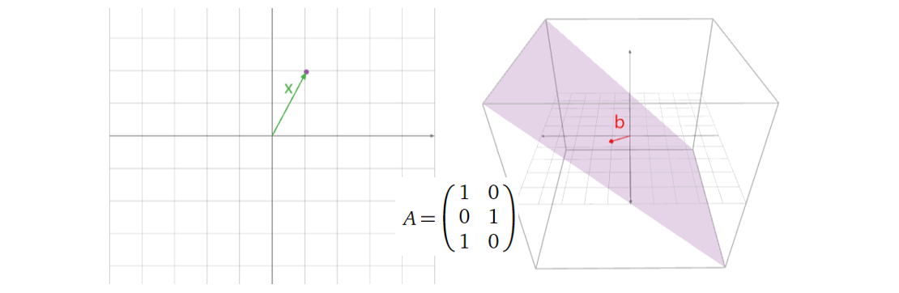
接着看一个多对一的矩阵变换的例子：
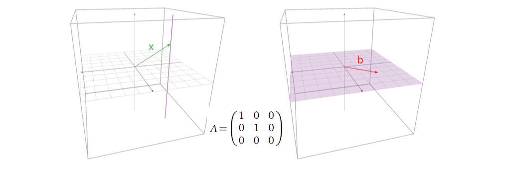
这个图中的矩阵 $A$ 代表着将三维空间中的点投影到x-y平面上，也就是说，在每一条跟z轴平行的线上的点（ $x$ ）都对应着同样的 $b$ 。
接下来给出一个稍微复杂一点的例子：
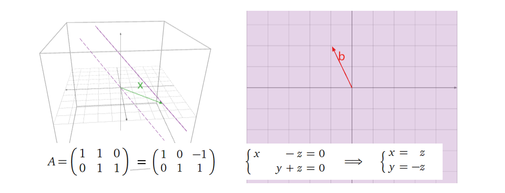
怎么理解这个结果？首先这是一个$R^3$到$R^2$的投射，维度的损失带来的就是多对一的投射（在这个例子中，一条直线（由矩阵的零空间维度决定）投射到一个点）；其次，我们之前讨论过， $Ax=b$ 的解可以视为 $Ax=0$ 解（零空间）的平移，在这个例子中， $Ax=0$ 的解为一条直线（ $x=z$ 与 $y=-z$ 两个平面的交界线，图中紫色虚线），而 $Ax=b$ 的解即为其平移后的直线（紫色实线），绿色向量即为其平移的大小。
其实也可以看出，如果一个矩阵的列数n多于行数m，这就意味着把一个高维空间的向量投影到一个低维空间（代数角度可以是矩阵没办法每一列都拥有主元，即列向量们线性依赖），这种情况下矩阵的零空间必然不只是零向量，进而 $Ax=b$ 的解也不只是一个向量，所以此时矩阵就无法实现一对一的投射。
顺带一提，像最后这个例子，矩阵 $A$ 的列空间（值域）与其取值空间一致（从代数角度其实就是，每一行都有主元，不然有的维度就被丢掉了），这种变换又叫onto变换（不知道怎么准确翻译…）。类似地，如果一个矩阵的列数n少于行数m，那么其取值空间维度（每一列向量含有的变量数目，即行数m）必然大于列空间（n个向量至多只能张成一个n维空间，$n<m$）维度。
对于一般的矩阵，上述两种变换，可以同时满足，也可以同时不满足，也可以只满足其中一个。但对于方阵而言，上述两种变换，必然同时满足，或同时不满足。为什么？对方阵而言，是否每一列都有主元（一对一变换成立）就意味着每一行都有主元（onto变换成立）？反之亦然。
接下来讨论一个问题：矩阵变换与线性变换（Linear Transformations）有什么关系？首先回忆下线性变换的定义，如果一个变换下面两个性质，则称其为线性变换：
$$
T(x+y)=T(x)+T(y),
T(cx)=cT(x)
$$
显然，每一个矩阵变换都能满足上述性质，也就是说每一个矩阵变换背后都代表着线性变换；而反之，每一个线性变换也都可以用矩阵变换来表示。换句话说，矩阵变换与线性变换是完全等同的。（顺带一提，留意像 $y=x+1$ 这种两个变量之间虽然是线性关系，但其变换并不是线性变换，不要混淆线性关系与线性变换的概念。其实正是这个表达式中的常数项破坏了其线性变换。）
也就是说，一个矩阵可以用下面的形式表示，其中$T$代表着某种线性变换，$e_1, e_2, …, e_n$ 代表着$R^n$的标准基向量。
怎么理解呢？矩阵 $A$ 的每一列代表着对 $R^n$ 空间中每一个维度进行的线性变换。有点抽象，举个例子好了：
假如现在要构造一个矩阵，其代表着将$R^3$中的点关于xy平面进行对称映射，再将其投影到yz平面上，那么这个矩阵应该是什么？
首先确定矩阵的第一列，也就是对$R^3$中的 $e_1$ 进行操作，其在经过上述操作后，会落到零点，所以：
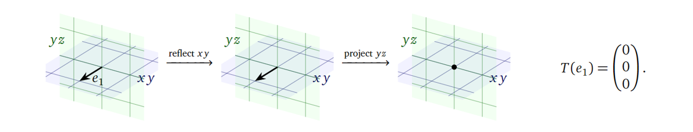
接着确定矩阵的第二列，也就是对$R^3$中的 $e_2$ 进行操作，其在经过上述操作后，会保持不变，所以：
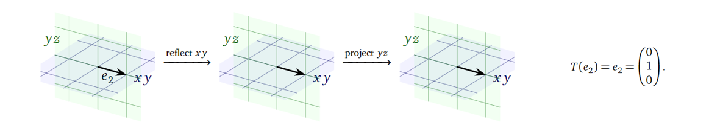
接着确定矩阵最后一列（变换后的空间仍是$R^3$），也就是对$R^3$中的 $e_3$ 进行操作，其在经过上述操作后，其方向会取反，所以：
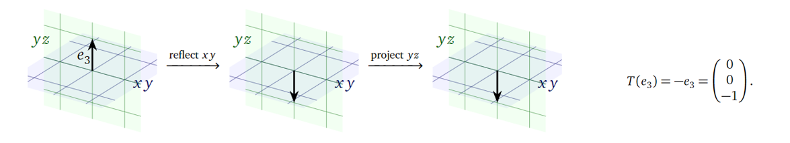
所以最后确定下来矩阵 $A$ 应该为：
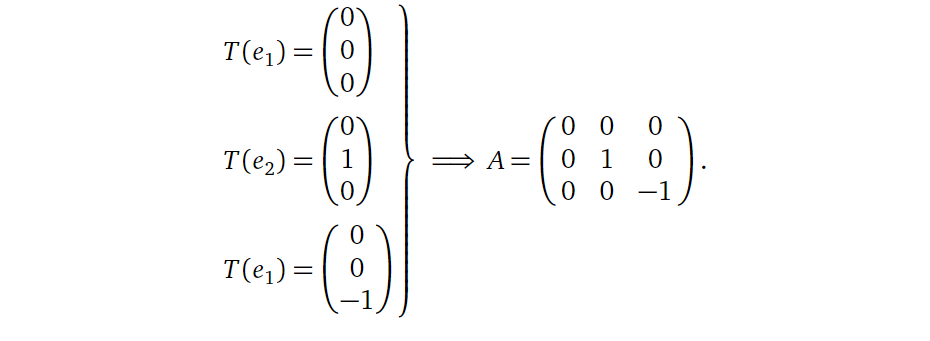
8. 矩阵乘法（Matrix Multiplication）
首先强调一下矩阵乘法（ $AB$ ）中， 矩阵 $B$ 的行数必须与矩阵 $A$ 的列数一致。怎么理解呢？矩阵乘法可以理解为前一个矩阵 $A$ 对后一个矩阵 $B$ 的各列向量进行空间变换，如下所示：
假设 $A$ 的维度为 $m$ x $n$，那么其代表着一个从 $^n$ 到 $R^m$ 的空间变换，那么必然 $B$ 中列向量的维度也必须为 $n$，也就是矩阵 $B$ 的行数必须为 $n$。
同样重要的是，一个 $m$ x $n$ 的矩阵 $A$ 乘上一个 $n$ x $p$ 的矩阵 $B$，其结果维度为 $m$ x $p$。这个又怎么理解呢？同样还是矩阵乘法可以理解为前一个矩阵 $A$ 对后一个矩阵 $B$ 的各列向量进行空间变换，而前者代表着一个从 $^n$ 到 $R^m$ 的空间变换，也就是变换后的列向量维度为 $m$，即 $AB$ 结果的行数为 $m$；而原来矩阵 $B$ 有 $p$ 个列向量，对他们分别进行矩阵变换并不会改变他们的数量，也就是说， $AB$ 结果的列数为 $p$。
类似地，基于矩阵乘法可以理解为前一个矩阵对后一个矩阵的各列向量进行空间变换，我们也可以理解矩阵乘法不满足交换律（对不同的向量进行不同的变换，他们相等的条件是不是很苛刻？），仅在少数情况下 $AB$ = $BA$ （但当方阵 $A$ 与 $B$ 有 $AB=I$ 时，直接会有 $BA=I=AB$）。
而因为矩阵可以代表着多对一的变换，由 $AB=AC$ 并不能得到 $B=C$，比如下面的例子：
上面是理解矩阵乘法的一个角度，也就是把第二个矩阵当成运算对象。而从另一个角度出发，之前我们提过，一个矩阵代表着一种线性变换，那么显然，两个矩阵相乘其实代表着做完一种线性变换之后接着再做另一种线性变换（链式线性变换）。
9. 矩阵的逆（Matrix Inverses）
首先明确，我们只针对方阵去讨论可逆的性质。怎么判断矩阵是否可逆？一种方式是可以通过其行列式（determinant）是否为0来判断，为0时矩阵不可逆（后面再进一步讨论矩阵行列式）。另一种方式是将增广矩阵 $(A|I_n)$ 变换为 $(I_n|B)$，那么矩阵 $B=A^{-1}$，即 $B$ 为 $A$ 的逆（这里隐含的条件是方阵 $A$ 必须满秩）。 而矩阵的逆是用来求解线性方程的一种很方便的方式（$x=A^{-1}b$）。
以上都是一些代数角度的讨论，接下来我们进行一些更几何化的补充。前面我们说了，一个矩阵代表着一种线性变换，那么逆矩阵的作用就是“撤销”这个线性变换。这其实也很好理解，$A^{-1}Ax=I_nx=x$，首先 $A$ 对 $x$ 进行了一个线性变换，然后 $A^{-1}$ 又撤销了这个变换（做了一个反向变换），结果就是 $x$ 经过这两个线性变换之后仍是其自身。下面给几个例子：
比如如果一个矩阵 $U$ 代表着缩小向量长度为$1/n$，那么其逆矩阵 $T$ 就代表着放大向量长度至$n$倍：
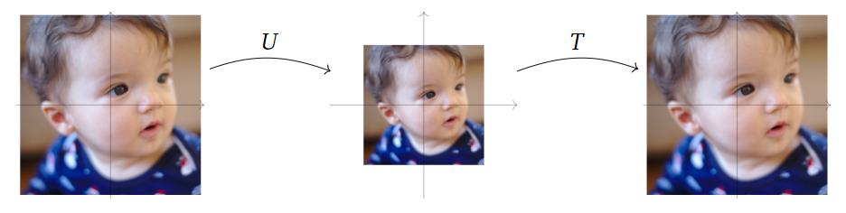
再比如一个矩阵 $T$ 代表着逆时针旋转45°，那么其逆矩阵 $U$ 就代表着顺时针旋转45°：
那又如何理解矩阵不可逆呢？考虑下面这个例子：矩阵 $A$ 代表着将三维空间中的点投影到xy平面，即:
显然这里的矩阵 $A$ 并不满秩，也就是说它代表着一个多对一的变换，即在它对矩阵进行线性变换之后，我们就丢掉了在变换之前的信息（我们只能知道哪些点会投影到变换后的点上，但确定不了是哪个点），而上面我们说了，矩阵的逆代表着反向变换，但这个时候矩阵已经不知道应该反到哪个点上了，所以这个矩阵就不可逆了。也就是说，一个方阵只有代表着一对一变换（因为是方阵也代表着onto变换），其才可逆。
结合之前的内容回顾总结一下，一个 $n$ x $n$ 方阵 $A$ 可逆，其与下列表述等价（它们之间也等价）：
- $A$ 拥有 $n$ 个主元；
- $A$ 的简化列阶梯形矩阵（RREF）是单位矩阵 $I_n$ ；
- $A$ 的零空间只有{0}；
- $A$ 的列空间是$R^n$；
- $A$ 的列向量线性独立；
- $A$ 的列向量可以张成$R^n$；
- $A$ 的列向量构成了$R^n$的一组基；
- $A$ 的秩是$n$（满秩）；
- $Ax=b$ 对于每个$b$都只有唯一解（且在$R^n$中）；
- $A$ 代表的变换为一对一变换；
- $A$ 代表的变换为onto变换。
也就是说，对一个可逆矩阵，上列表述都成立；而对于一个不可逆矩阵，上列表述都不成立。
顺带一提，要证明矩阵 $A$ 可逆，只需要证明 $AB=I_n$ 或 $BA=I_n$ 中的一个就足够。这里给出一个不完全的证明帮助理解：
$AB=I_n$ → $A^{-1}AB=A^{-1}I_n$ → $B=A^{-1}$ → $BA = A^{-1}A$ → $BA=I_n$
10. 行列式
参考书籍：Interactive Linear Algebra - by Dan Margalit, Joseph Rabinoff (https://textbooks.math.gatech.edu/ila/index2.html)